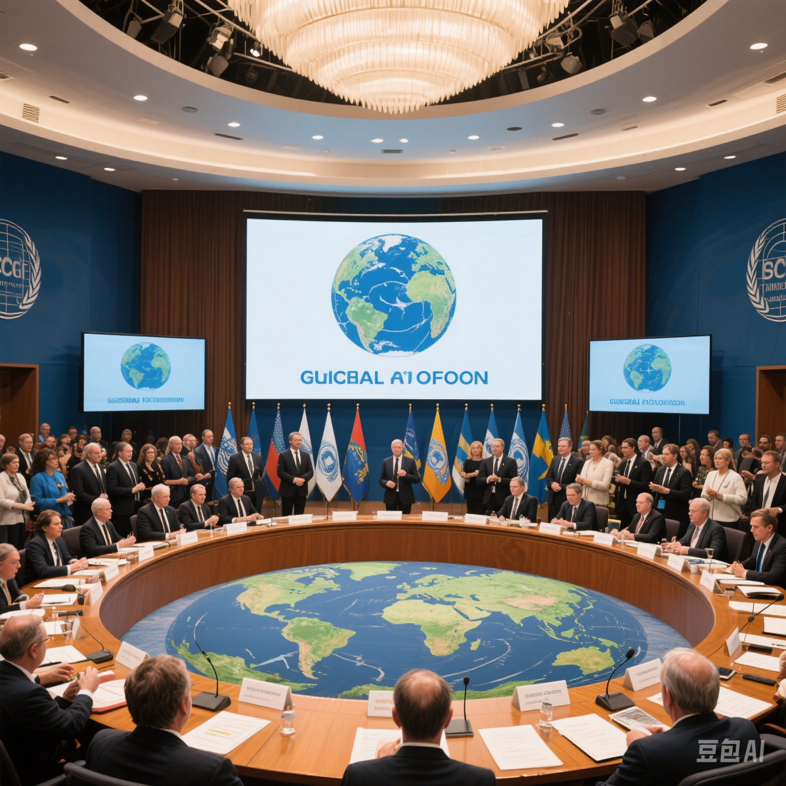
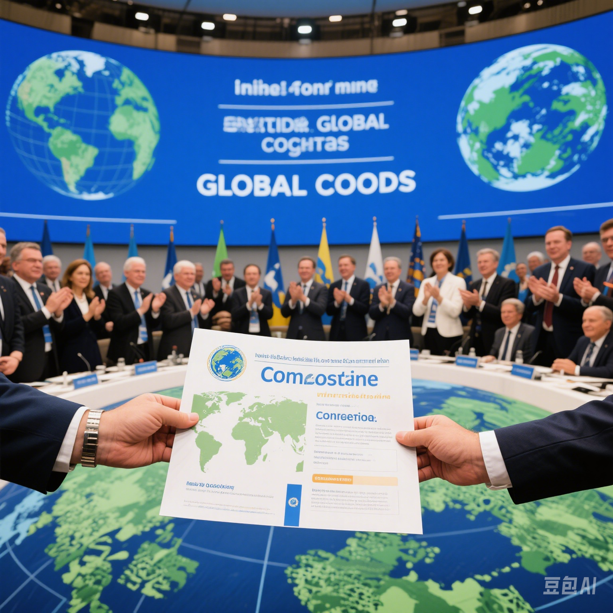
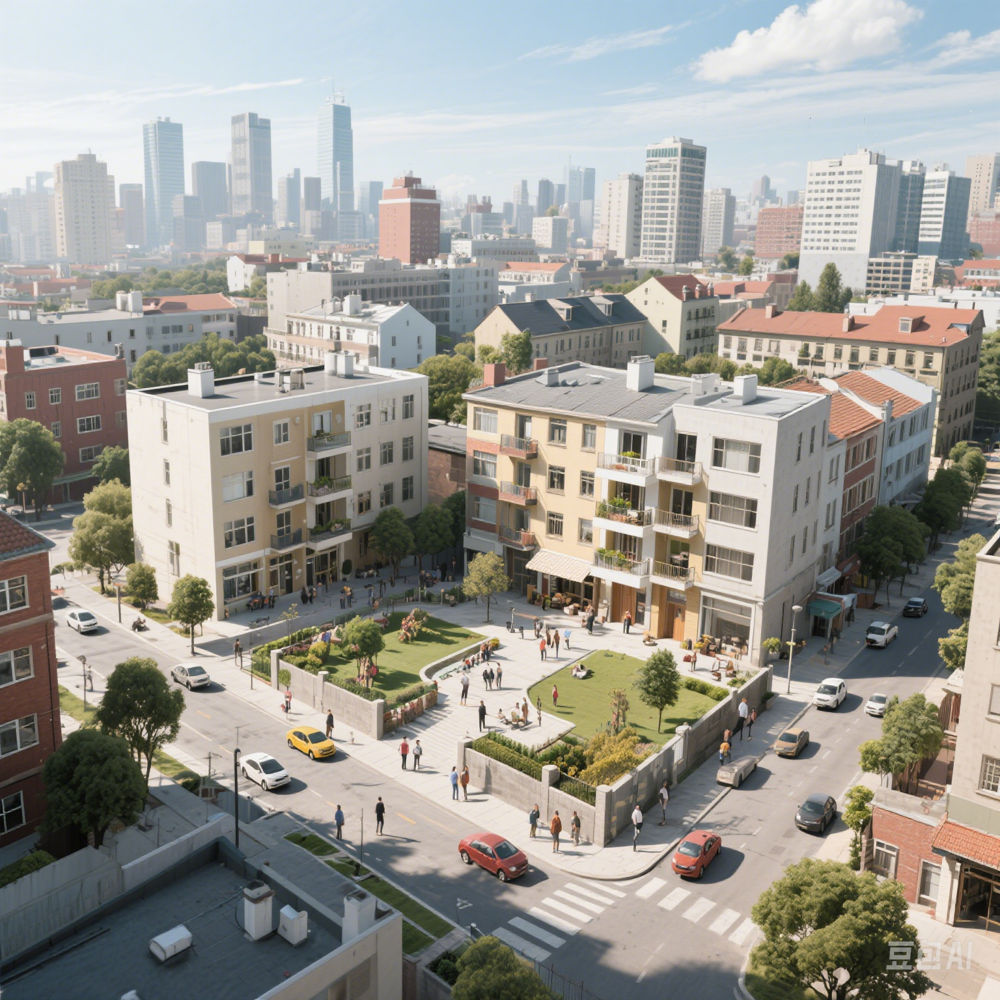
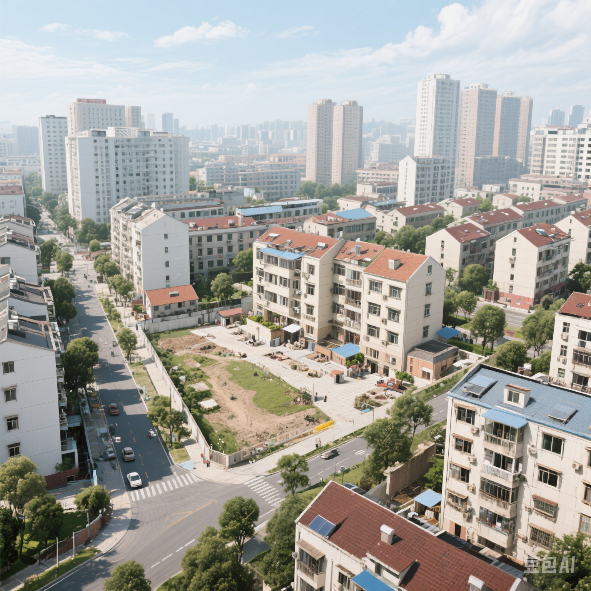
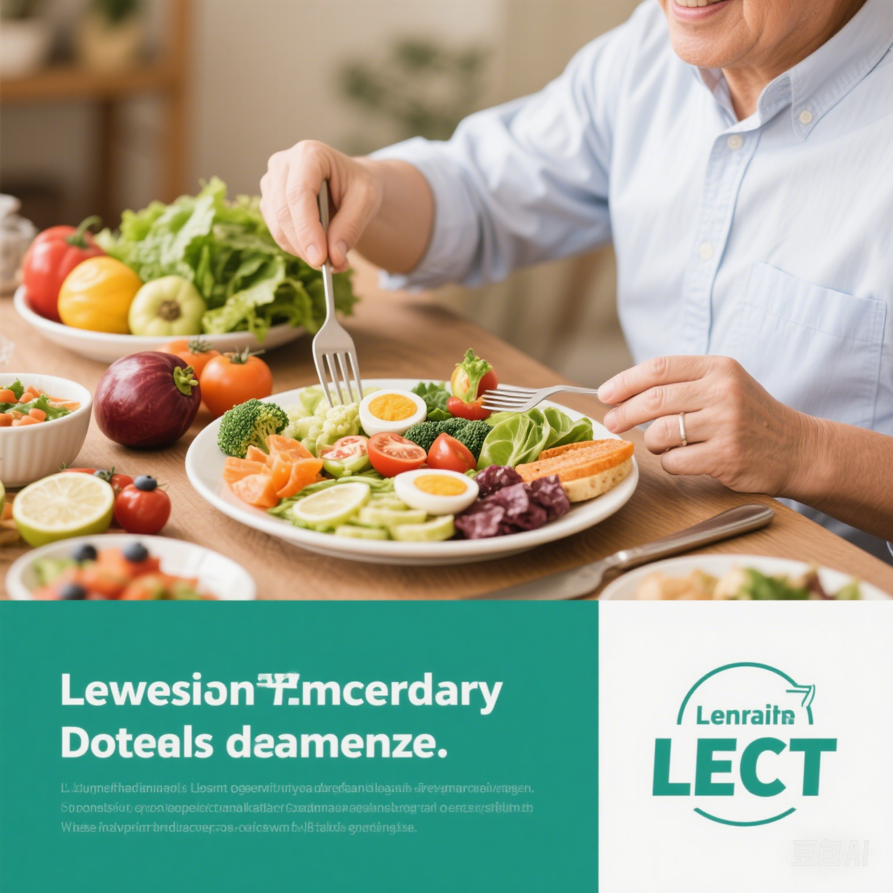
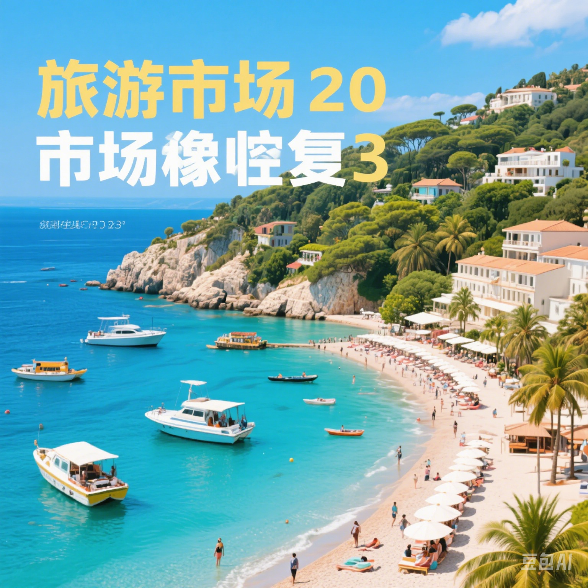

知识点视图
新闻资讯
HTML5 CSS3
HTML基础和HTML5
HTML标签与属性
HTML5多媒体(视频和音频)
HTML5图像标签(画布和SVG)
HTML5地理定位
HTML5表单
CSS基础和CSS3
CSS选择器
CSS样式
CSS盒模型与定位
CSS3的2D与3D转换
CSS3的过渡与动画
CSS3新的边框效果
JavaScript
数据类型
运算符
基础语法
BOM对象
DOM对象
JS特效
新闻资讯
科技创新引领未来发展新趋势
作者：索京奥 | 发布时间：2023-06-15 | 阅读量：1024
全球气候变化会议达成重要协议
 
作者：秦士淞 | 发布时间：2023-06-14 | 阅读量：876
城市更新项目改善居民生活质量
 
作者：林佳祺 | 发布时间：2023-06-13 | 阅读量：756
相关热文推荐
人工智能技术在各行业的应用前景分析
最新研究发现：健康饮食可延长寿命

旅游市场复苏，这些目的地最受欢迎
